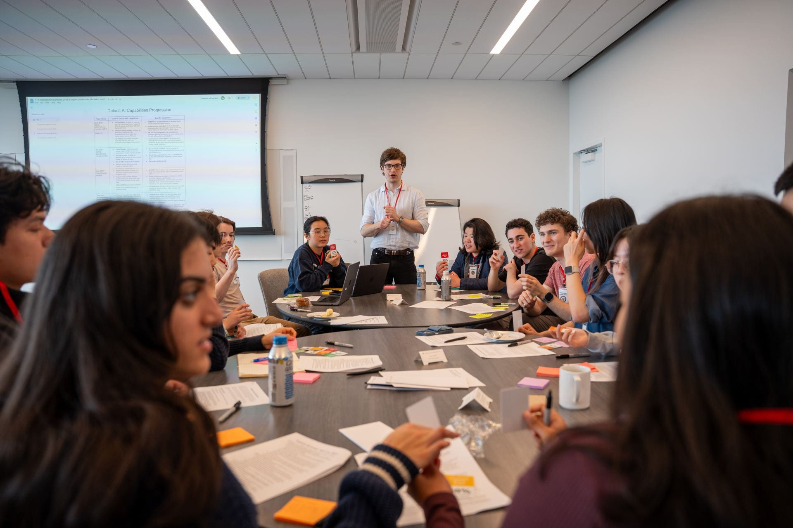
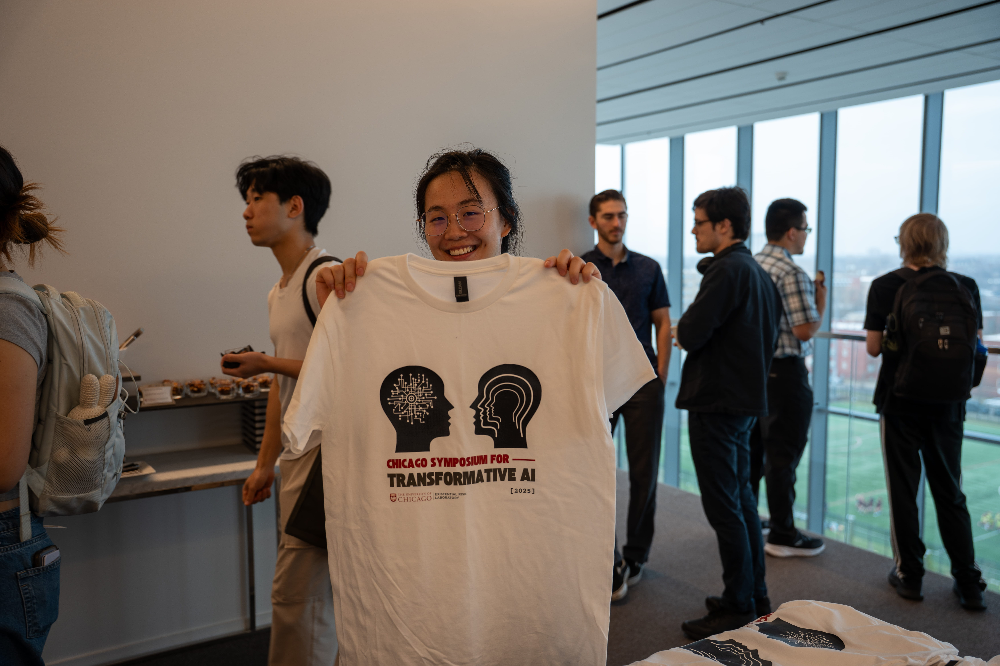
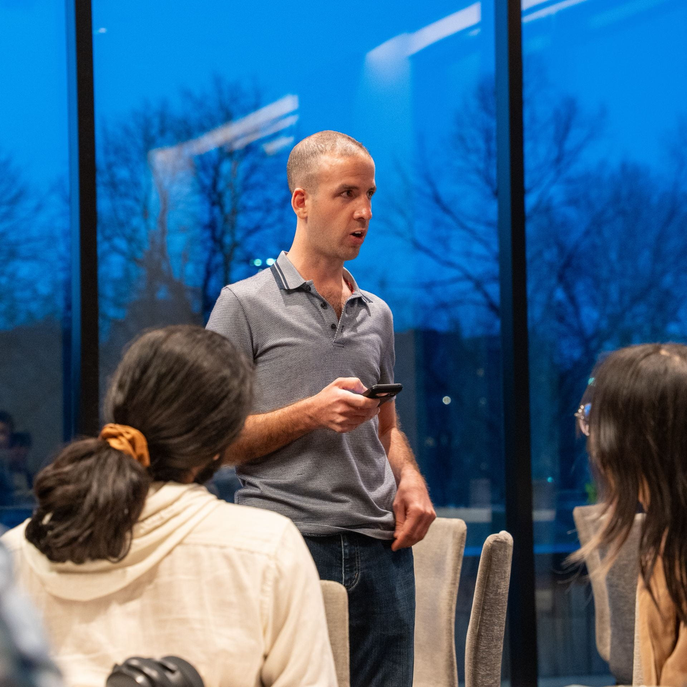

Artificial Intelligence
While artificial intelligence continues to improve rapidly, many of the scientists who developed the technology are now raising concerns that it could pose an existential threat to humanity. Echoing Robert Oppenheimer's warnings about nuclear weapons, top AI scientists such as Geoffrey Hinton, Ilya Sutskever, and Yoshua Bengio have suggested that their inventions now rank among humanity's greatest dangers.
AI may pose an existential risk in two distinct ways. The first, misuse, could threaten humanity's survival if future systems enable bad actors to create biological or nuclear weapons, or other capabilities that threaten human civilization. The second, misalignment, could pose an existential threat if a sufficiently intelligent system develops goals that conflict with human values and therefore takes actions indifferent to human welfare.

Our Strategy
Our group runs programs that provide value to both UChicago students and the wider community concerned about AI risk. For UChicago students we run an AI safety fundamentals course, social events, and research opportunities. While we pay particular attention to providing opportunities for UChicago students, XLab's ultimate goal is to benefit all of humanity — so we make our courses, research, and other resources publicly available to students at other schools and the wider research community.
Second Look
AI safety research increasingly shapes high-stakes decisions: which problems get prioritized, where talent flows, and what is communicated to the public. Since the field is so young, directional shifts in research priorities have a huge influence — yet there is no systematic process to ensure intellectual accountability. Even when papers are peer reviewed, reviewers rarely run any experiments themselves. This creates several risks:
- Internal epistemic risks: If foundational papers are misleading, the field will build strategy on shaky ground.
- Misallocated resources risks: AI safety work is talent- and time-constrained. Researchers who build on findings that don't generalize waste their limited attention on the wrong questions.
- External credibility risks: The AI safety community routinely shares research before it is verified by a third party. If findings end up being false, it could damage the credibility of the entire community.
Our solution is simple: we aim to strengthen AI safety's epistemic foundations by systematically verifying the empirical claims that shape research priorities and strategy.
AI Security Guide
The XLab AI Security Guide gives researchers and students the background needed to begin AI security research, with two core components: webpages giving an overview of each topic covered in the course, and coding exercises — runnable locally or in Google Colab — that test understanding and build the specific programming skills the work requires.

Chicago Symposium for Transformative AI
An intensive two-day event bringing together 30–40 promising undergraduates to rigorously examine the implications of transformative AI, held at the University of Chicago's David Rubenstein Forum. Participants heard from leading speakers in technical and policy AI research, in a program emphasizing independent thinking and assumption-challenging through scenario forecasting and interactive simulations of possible futures.

AI Policy Research
Over the course of two quarters, we have funded 7 research projects related to AI policy. While some deal directly with developing better legislation, others focus on technical research essential for informing and enforcing AI regulations. Selected projects were presented at the Chicago Symposium for Transformative AI.
AI Risk Fundamentals Course
XLab's AI Safety Fundamentals course is a seven-week reading group that brings students together each quarter for dinner and structured discussion of challenges facing the safe development of artificial intelligence. Students examine both technical safety challenges and broader policy considerations such as AI governance frameworks and regulatory approaches, with sessions dedicated to criticisms and counter-arguments within the field for a nuanced understanding of ongoing debates.
Research & Working Groups
Student-led working groups run two-quarter projects producing workshop papers across our risk areas, alongside individual fellow research on technical safety, governance, and forecasting.
TECHNICAL SAFETY
Empirical work on model evaluation, interpretability, and behavior under adversarial or high-stakes conditions — including replication studies that build a more robust evidence base for the field.
GOVERNANCE & SECURITY POLICY
Research on regulatory frameworks for frontier model development, including approval regimes, open-source model risk, and international coordination mechanisms.
FORECASTING & RISK ANALYSIS
Structured forecasting of catastrophic misuse and loss-of-control scenarios, drawing on methods from the broader existential risk forecasting literature.
Selected Research
Our People
Jo Jiao
Zephaniah Roe
Julian Huang
Want to work on this?
Our Summer Research Fellowship trains junior researchers to lead their own AI safety and security projects.
EXPLORE THE FELLOWSHIP →